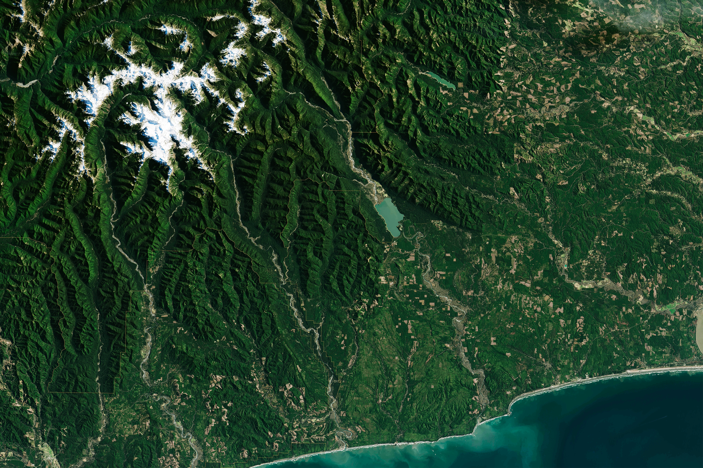

Carlos Pérez
I'm Cartographer
About
I am a GIS Technician with a background in Environmental Engineering, focused on geospatial data quality, spatial data processing, analysis workflows, and data management. With over three years of experience in environmental analysis, I have worked with sensitive datasets, prepared regulatory technical reports, and contributed to multiple research projects. I am a results-oriented professional with proven expertise in geospatial analysis, providing technical support for environmental and infrastructure projects through GIS-based solutions. My technical skills include the full ArcGIS ecosystem, Microsoft SQL Server, Python, and FME for GIS data processing, automation, and conversion, as well as experience with spatial databases, web-based GIS platforms, and advanced office productivity tools.

GIS & Environmental Engineer
“Spatial knowledge gives humans the ability to understand the what, when, and where. GIS is not just about making maps; it is the compass that shows us where we are and where we are heading.” – Carlos Perez
- Phone: 587-438-7249
- City: Calgary, AB
- Degrees: Environmental Engineering - Geographic Information System
- Email: carlosdanielperez8@gmail.com
-
My Roots:
-
I was born and raised in Bucaramanga, a small city in Colombia known for its incredible biodiversity, rich ecosystems, and diverse landscapes. Growing up in this environment sparked my passion for environmental engineering and geospatial sciences, shaping the way I understand and perceive the world around me.
Years Experience in Environmental Engineering and GIS
Projects GIS & Environmental
Tools Mastered ArcGIS, Python, FME, SQL
Programming Languages Python, SQL, R, Arcade
Key Skills
Core technical competencies in GIS, remote sensing, programming, and environmental analysis
Resume
Professional experience and academic background in Environmental Engineering and Geographic Information Systems
Education
Bachelor of Applied Geographic Information Systems (BGIS)
2025 – Present
Southern Alberta Institute of Technology (SAIT), Calgary, AB
Expanding expertise in spatial analysis, remote sensing, and data automation.
Bachelor's degree in Environmental Engineering
2015 – 2021
Universidad Pontificia Bolivariana, Colombia
Comprehensive training in environmental science, project management, and engineering principles.
Languages
English
Full professional proficiency
Spanish
Native
Soft Skills
- Results-oriented: Ability to prioritize objectives, optimizing available resources efficiently and in a timely manner, without compromising the quality of work.
- Adaptability: High ability to adapt to new environments, with ease in learning and implementing new methodologies, procedures, and requirements.
- Communication and teamwork: Clear and assertive verbal and written communication that promotes collaboration, teamwork, and positive learning environments.
- Self-learning: Ability to acquire knowledge constantly and quickly, applying it to the work environment to optimize processes and tasks.
- Problem solving: Effective performance in high-pressure environments, ensuring speed of execution and high-quality standards.
- Openness to feedback: Receptive attitude to constructive criticism, using it as an opportunity to continuously improve the quality of work.
- Motivation and curiosity: Passionate about learning, researching, and exploring new topics that add value to the projects I participate in.
Professional Experience
Environmental and Project Engineer
May 2022 – Jun 2025
PSL Proanálisis – Floridablanca, Colombia
- Data Management: Standardization, organization, and implementation of QA/QC procedures throughout the collection, processing, and management of field data to ensure data quality and traceability.
- Automation: Automation of processes using Python and Excel macros to ensure data repeatability and quality.
- Uncertainty Analysis: Development of spreadsheets for uncertainty estimation using the Monte Carlo method during data collection, organization, and processing.
- Statistical Analysis: Execution of multiple statistical analyses on field-collected data to estimate variability, uncertainty, standard deviation, among other metrics.
- GIS Support & Spatial Analysis: Provided support in the migration of geospatial data from ArcMap to ArcGIS Pro and delineated protected areas for oil and gas-related projects to support environmental decision-making.
- Reporting: Preparation of technical and environmental reports based on current legal and regulatory frameworks, ensuring compliance with relevant authorities.
- Research: Lead researcher in studies focused on the removal of dyes used in the textile industry through the application of various fungal strains.
Geospatial Data Analyst | Capstone Project
Jan 2026 – Apr 2026
SAIT / Saskatchewan Polytechnic
Assessment of the Impact of Oil on the Frog Lake First Nation
- Developed automated geospatial workflows for data collection, validation, processing, and reporting using Python, cloud-based GIS technologies, and multi-source datasets.
- Developed a standalone Python application using Google Earth Engine with a user-friendly interface, automating multi-source satellite imagery download and processing workflows to generate NDVI indices and support vegetation change analysis using Landsat and Sentinel-2 datasets.
- Developed a standalone Python application integrating multiple Google Earth Engine datasets to analyze vegetation change and generate interactive maps exported as local HTML files. The workflow incorporates AI components, using S2Cloudless for cloud detection and masking in Sentinel-2 imagery and Gemini (AI) to interpret results and automatically generate clear, non-technical insights for non-GIS audiences, including First Nations communities.
- Complete packaging of the script was implemented along with a user-friendly graphical interface, allowing end users to operate the tool without manually installing the required libraries.
- Conducted an environmental study and developed an interactive dashboard to communicate results, supporting community collaboration and multi-source data integration workflows.
Environmental Data Analyst | Academic Project
Sep 2025 – Dec 2025
Southern Alberta Institute of Technology (SAIT)
Groundwater Vulnerability Assessment
- Development of a groundwater vulnerability index in the Province of Alberta, using public and open-source data through the mapping of water wells and the analysis of key variables such as permeability, water level, sediment thickness, and distance to agricultural areas.
- Using open data from Sentinel Land Use/Land Cover (LULC), agricultural zones were identified to subsequently perform buffer analyses and calculate distances between water wells and agricultural areas.
- Statistical analyses (Hot Spot and Cold Spot Analysis) were conducted to identify regions of Alberta exhibiting higher vulnerability in relation to agricultural land use.
- Delivery of thematic maps and a technical report to support initiatives aimed at groundwater protection and preservation.
Environmental Engineering Research
Jan 2021 – Dec 2021
Universidad Pontificia Bolivariana, Bucaramanga, Colombia
Vulnerability Index for Transboundary Aquifers (DRASTIC Method)
- An index was developed to quantify the vulnerability of transboundary aquifers, considering both the natural characteristics of the aquifers and the anthropogenic activities occurring around these water bodies.
- GIS analysis was used to create an elevation model in QGIS, which allowed the determination of key variables such as elevation, net recharge, and aquifer layer thickness.
- A geospatial analysis was then conducted to identify the regions experiencing higher levels of vulnerability based on the variables obtained.
Portfolio
Featured projects in GIS, remote sensing, 3D modeling, and environmental analysis


Contact
Get in touch for collaborations, project inquiries, or professional opportunities
Location
Calgary, Alberta, Canada
Call
587-438-7249
carlosdanielperez8@gmail.com